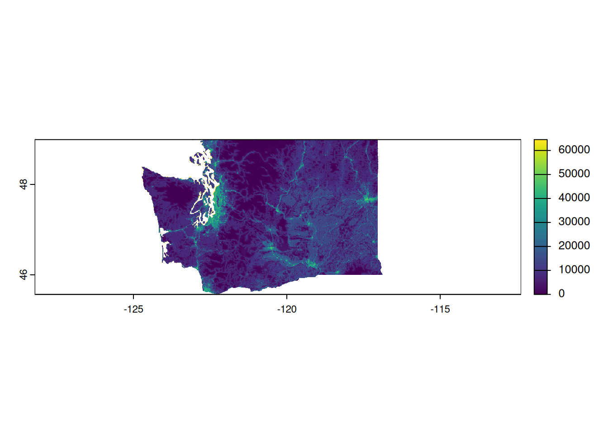
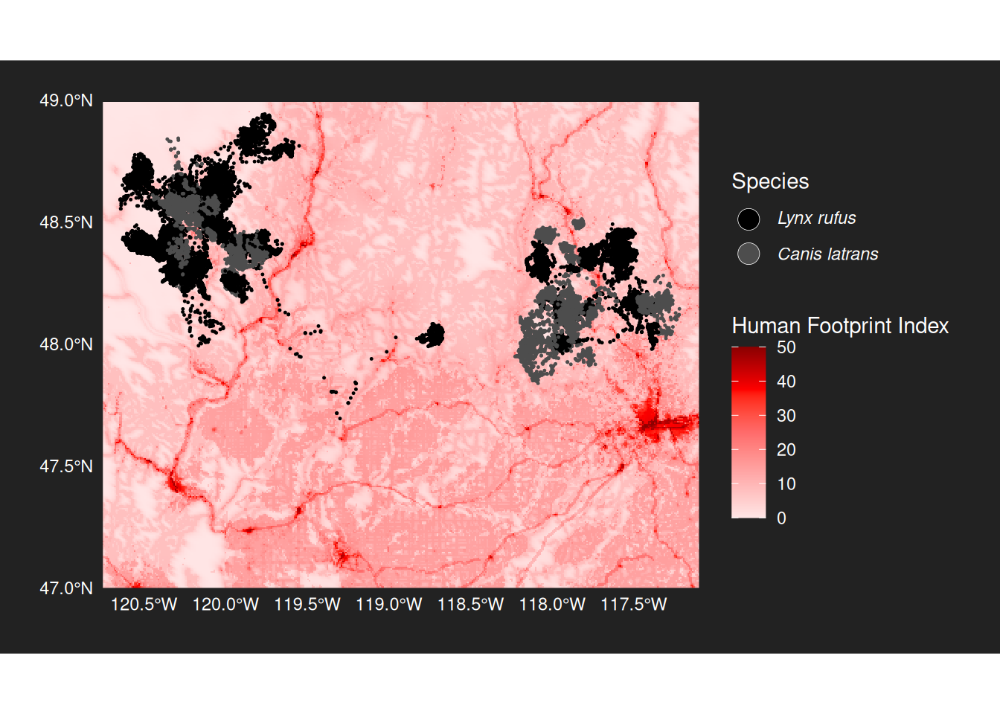

pacman::p_load(
sf,
terra,
tidyverse,
rnaturalearth
)HFP subsetting
Load libraries
Load WA state boundary
# Load Washington boundary in Mollweide
wa_boundary <- ne_states(
country = "United States of America",
returnclass = "sf") |>
filter(name == "Washington") |>
st_transform("ESRI:54009") # Convert to MollweideGet list of all human footprint data tiles (ca. 20 GB of data)
# Download as a tgz from https://datadryad.org/downloads/file_stream/2679334
# and extract to the given directory
tif_files <- list.files("data/hfp-100m-2020/", pattern = "\\.tif$", full.names = TRUE)Identify relevant tiles and process them
check_overlap <- function(tif_file, boundary) {
r <- rast(tif_file)
r_extent <- ext(r)
r_poly <- st_as_sfc(st_bbox(r_extent)) |>
st_set_crs(crs(r))
return(st_intersects(r_poly, boundary, sparse = FALSE)[1,1])
}
overlap_results <- sapply(tif_files, check_overlap, boundary = wa_boundary)
relevant_files <- tif_files[overlap_results]
hfp_combined <- relevant_files |>
map(rast) |>
(\(x) do.call(merge, x))() |>
crop(vect(wa_boundary)) |>
mask(vect(wa_boundary))
|---------|---------|---------|---------|
===========================
Project to WGS 84
# Length of 1 degree longitude at latitude φ ≈ 111,320 × cos(φ) meters
# cos(48°) ≈ 0.6691
# So 1° longitude ≈ 111,320 × 0.6691 ≈ 74,500 meters
# 1° latitude is still ≈ 111,000 meters
# Divide 100 by 111,000 and 74,500 to match resolution
hfp_wgs84 <- project(
hfp_combined, "EPSG:4326",
method = "near", # Using nearest neighbor method for data integrity
res = c(0.00134, 0.0009)) # (x, y) = (long, lat)
|---------|---------|---------|---------|
=========================================
plot(hfp_wgs84)
Save the final cropped HFP raster
writeRaster(
hfp_wgs84,
"data/HFP_washington.tif",
overwrite = TRUE,
datatype = "FLT4S", # Maintain decimal precision for HFP values
gdal = c("COMPRESS=LZW") # Reduce file size
)Create a zoomed in chart for the paper with animal tracks overlay
# From https://www.movebank.org/cms/webapp?gwt_fragment=page%3Dstudies%2Cpath%3Dstudy2636372210
tracking_data <- read_delim("data/bobcat_coyotes_wa_gps.csv")Rows: 121706 Columns: 15
── Column specification ────────────────────────────────────────────────────────
Delimiter: ","
chr (7): gps:fix-type-raw, mortality-status, sensor-type, individual-taxon-...
dbl (6): event-id, location-long, location-lat, gps:hdop, gps:satellite-cou...
lgl (1): visible
dttm (1): timestamp
ℹ Use `spec()` to retrieve the full column specification for this data.
ℹ Specify the column types or set `show_col_types = FALSE` to quiet this message.animal_sf <- tracking_data |>
st_as_sf(
coords = c("location-long", "location-lat"),
crs = 4326 # WGS84
)
ggplot() +
tidyterra::geom_spatraster(
data = hfp_wgs84,
maxcell = 1e6
) +
scale_fill_gradient(low = "grey", high = "#FF6F61", na.value = "gray90", name = "Human footprint index") +
geom_sf(
data = animal_sf,
aes(color = `individual-taxon-canonical-name`),
size = 0.1,
alpha = 0.7
) +
scale_color_manual(values = c("Canis latrans" = "black", "Lynx rufus" = "white"),
name = "Species") +
coord_sf(
xlim = c(-120.7, -117.1),
ylim = c(47, 49),
expand = FALSE
) +
theme(
legend.background = element_rect(fill = "gray90", color = "black"),
) +
guides(
color = guide_legend(override.aes = list(size = 4)),
)<SpatRaster> resampled to 1001952 cells.
ggsave("img/hfp.png")Saving 7 x 5 in imageAdjusted plot for correctly scaled HFP and consistent theme
hfp <- rast("data/HFP_washington.tif")
NAflag(hfp) <- 64536 # Set no-data value
hfp_capped <- classify(hfp, matrix(c(50000, Inf, 50000), ncol = 3, byrow = TRUE)) # Cap at 50k
hfp_scaled <- hfp_capped/1000 # Scale to 0-50
ggplot() +
# Human Footprint Raster (using viridis option "D")
tidyterra::geom_spatraster(
data = hfp_scaled,
maxcell = 1e6
) +
scale_fill_viridis_c(
option = "D",
na.value = "transparent", # Changed from gray90 to match dark theme
name = "Human Footprint Index"
) +
# Animal Tracking Data (consistent with your first plot)
geom_sf(
data = animal_sf,
aes(color = `individual-taxon-canonical-name`),
size = 0.7, # Increased from 0.1 for visibility
alpha = 1 # Changed from 0.7 for better visibility
) +
scale_color_manual(
values = c("Lynx rufus" = "black", "Canis latrans" = "gray30"), # Matching first plot
labels = c(expression(italic("Lynx rufus")), expression(italic("Canis latrans"))),
name = "Species"
) +
# Coordinate System
coord_sf(
xlim = c(-120.7, -117.1),
ylim = c(47, 49),
expand = FALSE
) +
# Dark Theme (matching SSF plots)
theme(
legend.position = "right",
text = element_text(color = "white"),
axis.text = element_text(color = "white"),
panel.background = element_rect(fill = "#2D2D2D", color = NA),
plot.background = element_rect(fill = "#2D2D2D", color = NA),
panel.grid = element_blank(),
axis.ticks = element_blank(),
legend.background = element_rect(fill = "#2D2D2D", color = NA),
legend.key = element_rect(fill = "#2D2D2D", color = NA),
strip.text = element_text(color = "white", size = 10),
plot.title = element_text(margin = margin(b = 15)),
axis.title.x = element_text(margin = margin(t = 15)),
axis.title.y = element_text(margin = margin(r = 15)),
plot.margin = margin(20, 20, 20, 20, unit = "pt")
) +
guides(
color = guide_legend(
override.aes = list(
size = 5,
shape = 21,
fill = c("black", "gray30"),
color = "white",
stroke = 0.2
)
)
)<SpatRaster> resampled to 1001952 cells.
ggsave("img/hfp_adj.png",
bg = "#2D2D2D",
width = 10, height = 5.5,
dpi = 300)